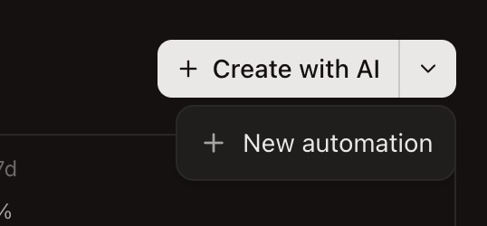

One creation menu. Manual first, with a pencil. AI second, with a sparkle. Both choices explain what happens next.
Automations · Header actions · Three directions
01
What’s getting in the way
Component: apps/desktop/src/renderer/routes/_authenticated/_dashboard/components/FeatureHeader/FeatureHeader.tsx Caller: automations/page.tsx · Shared primitives: @superset/ui/button and @superset/ui/dropdown-menu

Your supplied crop. Its display scale is unknown; the code already uses a compact 32px button. This is primarily an action hierarchy problem.
1. The second creation path is hidden.
A one-item menu adds a discovery step to a core action. Put “Create manually” beside the primary action, using the existing ghost button.
2. The labels don’t describe parallel choices.
“Create with AI” describes a method; “New automation” describes an outcome shared by both. Use “Create with AI” and “Create manually.”
3. Both paths use the same plus icon.
The repeated symbol gives no extra cue about the difference. Use a small sparkle for the AI action, and let the manual action’s text carry its meaning.
02
Try three directions
Interactive sketches in Superset’s existing Ember palette. Click the controls to preview their intent; no automation is created. Background rows are illustrative.
Selected: C — creation menu, manual first.
Use a single “New automation” button. The first item is “Create manually” with a pencil icon; “Create with AI” follows with a sparkle. Keep the helper text under each label.
SUPERSET / AUTOMATIONSInteractive concept
Automations ?
Run recurring work with your agents.
Weekly changelogEvery Monday · 9:00 AM
Review open pull requestsWeekdays · 8:00 AM
Dependency health checkEvery Friday · 4:00 PM
Choose an action to preview where it leads.
Both paths are one click away
A quiet text action followed by the primary AI button removes the extra menu interaction without adding another filled button.
Tradeoff
Uses more header width. Allow the action group to wrap below the title on narrow panes, preserving the labels.
03
Patterns worth borrowing
Atlassian Design System
Default action + related alternatives
Atlassian defines a split button as a way to perform an action or choose from a small group of similar actions.
Apply to B: retain one-click AI creation when space is constrained. Name the arrow “More creation options” and clarify the manual item.
Research checked September 13, 2026. These are pattern interpretations from public first-party documentation, not replicas of those products. Mobbin was checked, but no relevant individual screen was verified through public access; no Mobbin screenshot is presented as evidence.
04
Keep the change small
Detail
Suggested treatment
Reuse from the repo
Action layout
One New automation trigger. Manual is the first menu item; AI is second.
DropdownMenu
Button scale
Keep 32px height and 14px text. Use the existing corner radius.
Button size="sm"
Visual hierarchy
Primary fill on the trigger; both menu items use the same hover and focus treatment.
Excerpt omits helper text, Lingui wrappers, handlers, and conditional rendering. Preserve secondaryAction optionality, onCreate, onSelect, and both disabled states. Change the automation caller’s label to <Trans>Create manually</Trans>. The shared header’s other consumers need review before adoption.
Before shipping the product change
Match the wording in AutomationsEmptyState so the two entry points teach the same actions.
Translate changed labels and any progress copy through Lingui; run bun run check:i18n and finish each locale.
Verify keyboard navigation, pending states, and narrow panes in the desktop app. Menu variants need Escape, arrow keys, and focus return.
Check that people can identify both creation routes without opening a menu. The proposed improvement is a design hypothesis, not a measured usability result.